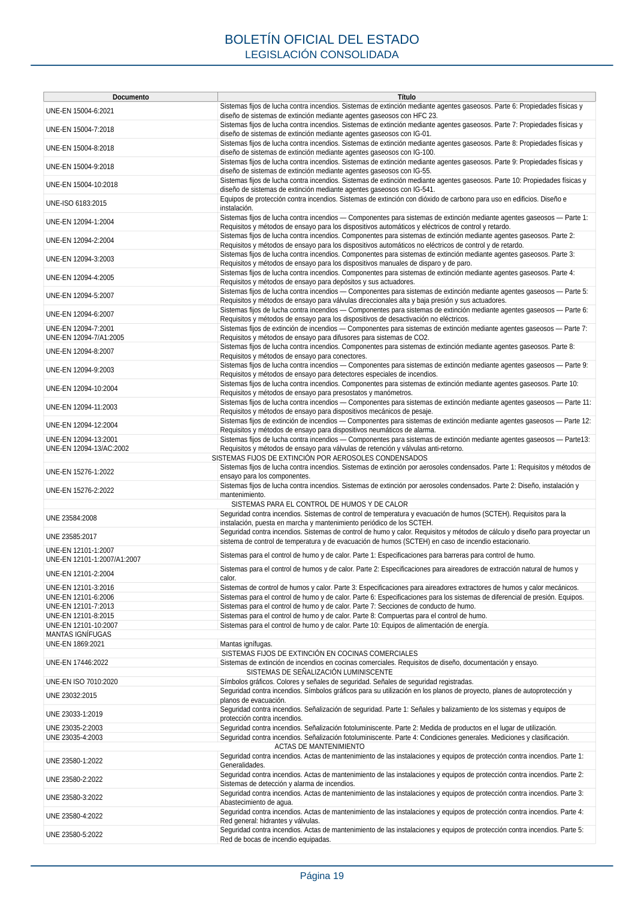

RSCIEI · Página 19 · versión 2025-04-10
SHA256: 85aa0af25d51e5b58d8975a4eefbf76d3f57a8933445cfe814ae9c4818a2e3e7 · página física 19 de 108 · métodos de encabezado
solo si están cotejados.
Formatos: Markdown · JSON de bloques · PDF p. 19 · imagen PNG
Documento Título UNE-EN 15004-6:2021 Sistemas fijos de lucha contra incendios. Sistemas de extinción mediante agentes gaseosos. Parte 6: Propiedades físicas y diseño de sistemas de extinción mediante agentes gaseosos con HFC 23. UNE-EN 15004-7:2018 Sistemas fijos de lucha contra incendios. Sistemas de extinción mediante agentes gaseosos. Parte 7: Propiedades físicas y diseño de sistemas de extinción mediante agentes gaseosos con IG-01. UNE-EN 15004-8:2018 Sistemas fijos de lucha contra incendios. Sistemas de extinción mediante agentes gaseosos. Parte 8: Propiedades físicas y diseño de sistemas de extinción mediante agentes gaseosos con IG-100. UNE-EN 15004-9:2018 Sistemas fijos de lucha contra incendios. Sistemas de extinción mediante agentes gaseosos. Parte 9: Propiedades físicas y diseño de sistemas de extinción mediante agentes gaseosos con IG-55. UNE-EN 15004-10:2018 Sistemas fijos de lucha contra incendios. Sistemas de extinción mediante agentes gaseosos. Parte 10: Propiedades físicas y diseño de sistemas de extinción mediante agentes gaseosos con IG-541. UNE-ISO 6183:2015 Equipos de protección contra incendios. Sistemas de extinción con dióxido de carbono para uso en edificios. Diseño e instalación. UNE-EN 12094-1:2004 Sistemas fijos de lucha contra incendios — Componentes para sistemas de extinción mediante agentes gaseosos — Parte 1: Requisitos y métodos de ensayo para los dispositivos automáticos y eléctricos de control y retardo. UNE-EN 12094-2:2004 Sistemas fijos de lucha contra incendios. Componentes para sistemas de extinción mediante agentes gaseosos. Parte 2: Requisitos y métodos de ensayo para los dispositivos automáticos no eléctricos de control y de retardo. UNE-EN 12094-3:2003 Sistemas fijos de lucha contra incendios. Componentes para sistemas de extinción mediante agentes gaseosos. Parte 3: Requisitos y métodos de ensayo para los dispositivos manuales de disparo y de paro. UNE-EN 12094-4:2005 Sistemas fijos de lucha contra incendios. Componentes para sistemas de extinción mediante agentes gaseosos. Parte 4: Requisitos y métodos de ensayo para depósitos y sus actuadores. UNE-EN 12094-5:2007 Sistemas fijos de lucha contra incendios — Componentes para sistemas de extinción mediante agentes gaseosos — Parte 5: Requisitos y métodos de ensayo para válvulas direccionales alta y baja presión y sus actuadores. UNE-EN 12094-6:2007 Sistemas fijos de lucha contra incendios — Componentes para sistemas de extinción mediante agentes gaseosos — Parte 6: Requisitos y métodos de ensayo para los dispositivos de desactivación no eléctricos. UNE-EN 12094-7:2001 UNE-EN 12094-7/A1:2005 Sistemas fijos de extinción de incendios — Componentes para sistemas de extinción mediante agentes gaseosos — Parte 7: Requisitos y métodos de ensayo para difusores para sistemas de CO2. UNE-EN 12094-8:2007 Sistemas fijos de lucha contra incendios. Componentes para sistemas de extinción mediante agentes gaseosos. Parte 8: Requisitos y métodos de ensayo para conectores. UNE-EN 12094-9:2003 Sistemas fijos de lucha contra incendios — Componentes para sistemas de extinción mediante agentes gaseosos — Parte 9: Requisitos y métodos de ensayo para detectores especiales de incendios. UNE-EN 12094-10:2004 Sistemas fijos de lucha contra incendios. Componentes para sistemas de extinción mediante agentes gaseosos. Parte 10: Requisitos y métodos de ensayo para presostatos y manómetros. UNE-EN 12094-11:2003 Sistemas fijos de lucha contra incendios — Componentes para sistemas de extinción mediante agentes gaseosos — Parte 11: Requisitos y métodos de ensayo para dispositivos mecánicos de pesaje. UNE-EN 12094-12:2004 Sistemas fijos de extinción de incendios — Componentes para sistemas de extinción mediante agentes gaseosos — Parte 12: Requisitos y métodos de ensayo para dispositivos neumáticos de alarma. UNE-EN 12094-13:2001 UNE-EN 12094-13/AC:2002 Sistemas fijos de lucha contra incendios — Componentes para sistemas de extinción mediante agentes gaseosos — Parte13: Requisitos y métodos de ensayo para válvulas de retención y válvulas anti-retorno. SISTEMAS FIJOS DE EXTINCIÓN POR AEROSOLES CONDENSADOS UNE-EN 15276-1:2022 Sistemas fijos de lucha contra incendios. Sistemas de extinción por aerosoles condensados. Parte 1: Requisitos y métodos de ensayo para los componentes. UNE-EN 15276-2:2022 Sistemas fijos de lucha contra incendios. Sistemas de extinción por aerosoles condensados. Parte 2: Diseño, instalación y mantenimiento. SISTEMAS PARA EL CONTROL DE HUMOS Y DE CALOR UNE 23584:2008 Seguridad contra incendios. Sistemas de control de temperatura y evacuación de humos (SCTEH). Requisitos para la instalación, puesta en marcha y mantenimiento periódico de los SCTEH. UNE 23585:2017 Seguridad contra incendios. Sistemas de control de humo y calor. Requisitos y métodos de cálculo y diseño para proyectar un sistema de control de temperatura y de evacuación de humos (SCTEH) en caso de incendio estacionario. UNE-EN 12101-1:2007 UNE-EN 12101-1:2007/A1:2007 Sistemas para el control de humo y de calor. Parte 1: Especificaciones para barreras para control de humo. UNE-EN 12101-2:2004 Sistemas para el control de humos y de calor. Parte 2: Especificaciones para aireadores de extracción natural de humos y calor. UNE-EN 12101-3:2016 Sistemas de control de humos y calor. Parte 3: Especificaciones para aireadores extractores de humos y calor mecánicos. UNE-EN 12101-6:2006 Sistemas para el control de humo y de calor. Parte 6: Especificaciones para los sistemas de diferencial de presión. Equipos. UNE-EN 12101-7:2013 Sistemas para el control de humo y de calor. Parte 7: Secciones de conducto de humo. UNE-EN 12101-8:2015 Sistemas para el control de humo y de calor. Parte 8: Compuertas para el control de humo. UNE-EN 12101-10:2007 Sistemas para el control de humo y de calor. Parte 10: Equipos de alimentación de energía. MANTAS IGNÍFUGAS UNE-EN 1869:2021 Mantas ignífugas. SISTEMAS FIJOS DE EXTINCIÓN EN COCINAS COMERCIALES UNE-EN 17446:2022 Sistemas de extinción de incendios en cocinas comerciales. Requisitos de diseño, documentación y ensayo. SISTEMAS DE SEÑALIZACIÓN LUMINISCENTE UNE-EN ISO 7010:2020 Símbolos gráficos. Colores y señales de seguridad. Señales de seguridad registradas. UNE 23032:2015 Seguridad contra incendios. Símbolos gráficos para su utilización en los planos de proyecto, planes de autoprotección y planos de evacuación. UNE 23033-1:2019 Seguridad contra incendios. Señalización de seguridad. Parte 1: Señales y balizamiento de los sistemas y equipos de protección contra incendios. UNE 23035-2:2003 Seguridad contra incendios. Señalización fotoluminiscente. Parte 2: Medida de productos en el lugar de utilización. UNE 23035-4:2003 Seguridad contra incendios. Señalización fotoluminiscente. Parte 4: Condiciones generales. Mediciones y clasificación. ACTAS DE MANTENIMIENTO UNE 23580-1:2022 Seguridad contra incendios. Actas de mantenimiento de las instalaciones y equipos de protección contra incendios. Parte 1: Generalidades. UNE 23580-2:2022 Seguridad contra incendios. Actas de mantenimiento de las instalaciones y equipos de protección contra incendios. Parte 2: Sistemas de detección y alarma de incendios. UNE 23580-3:2022 Seguridad contra incendios. Actas de mantenimiento de las instalaciones y equipos de protección contra incendios. Parte 3: Abastecimiento de agua. UNE 23580-4:2022 Seguridad contra incendios. Actas de mantenimiento de las instalaciones y equipos de protección contra incendios. Parte 4: Red general: hidrantes y válvulas. UNE 23580-5:2022 Seguridad contra incendios. Actas de mantenimiento de las instalaciones y equipos de protección contra incendios. Parte 5: Red de bocas de incendio equipadas. BOLETÍN OFICIAL DEL ESTADO LEGISLACIÓN CONSOLIDADA Página 19
